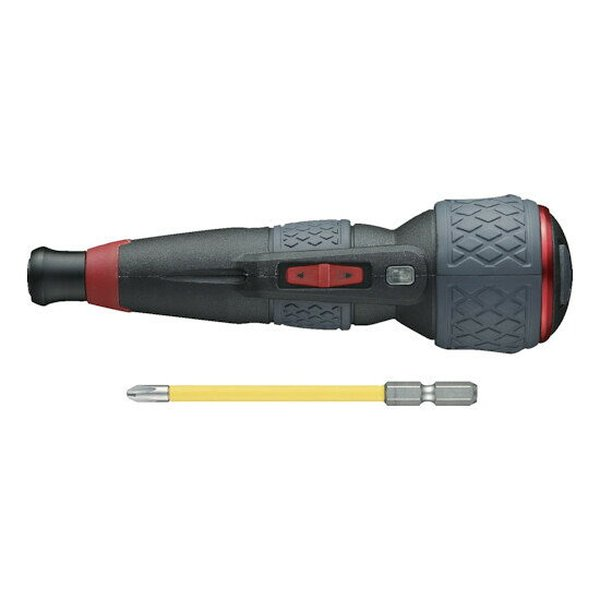
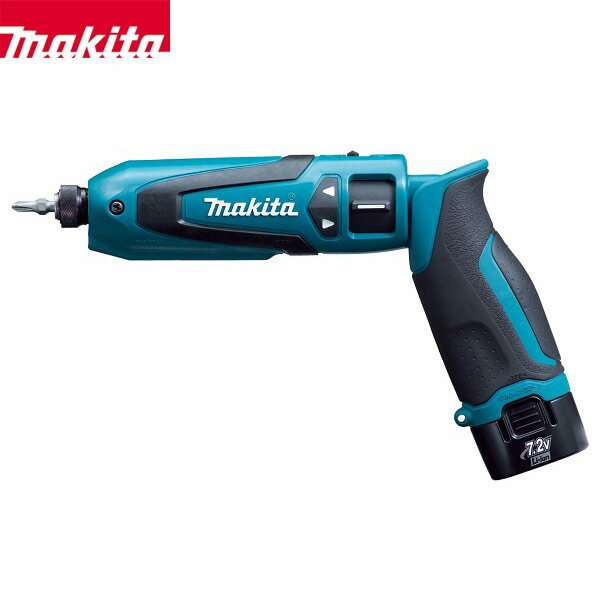
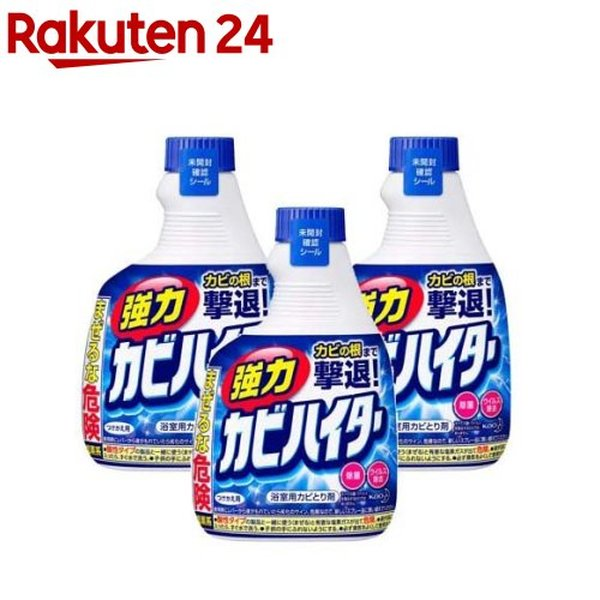
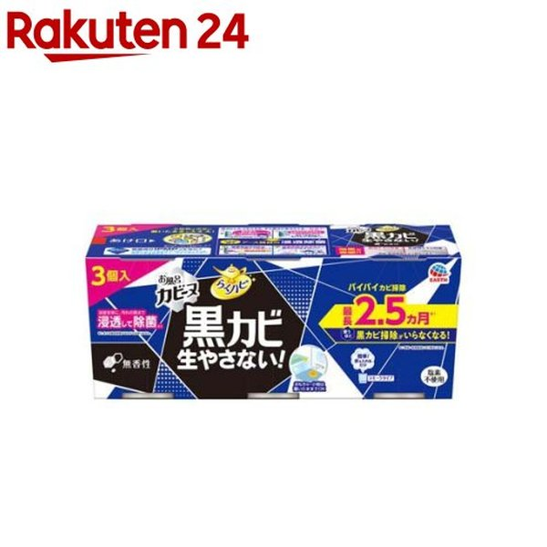
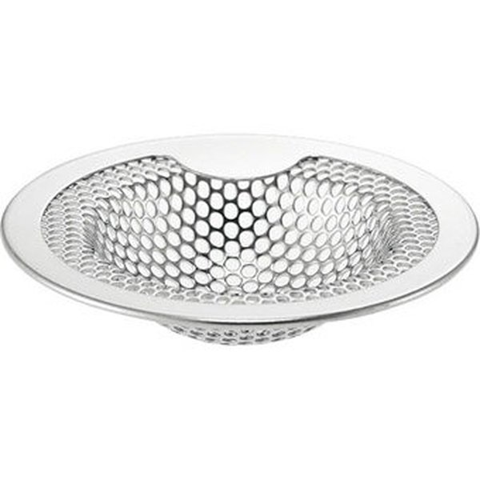
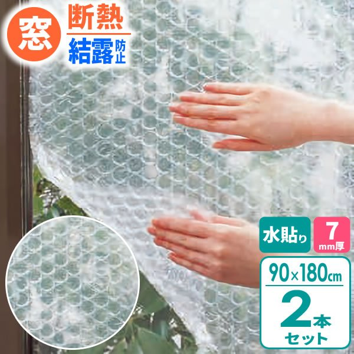
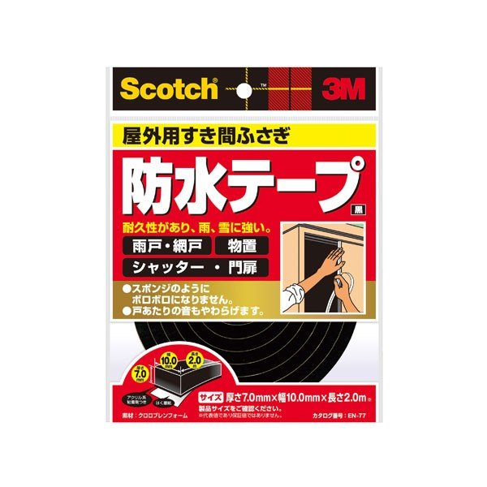
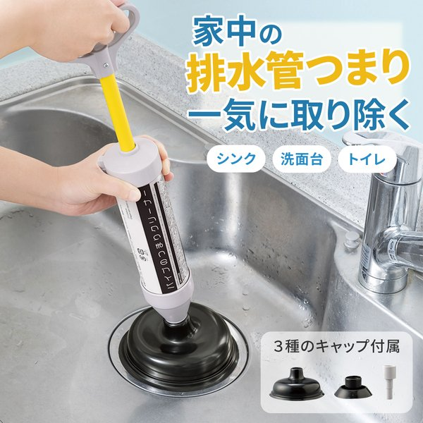
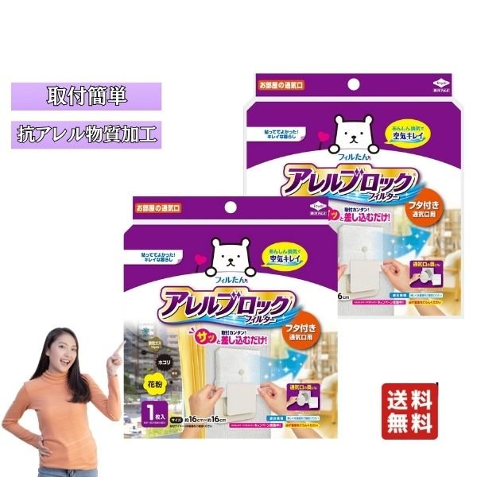

【2026年年末大掃除＆冬支度】賃貸でも使える！電動ドライバー・隙間テープ・カビ防止・排水口＆暮らしのメンテナンス便利グッズ10選
12月の大掃除は、掃除そのものより「直す・ふさぐ・防ぐ」に時間がかかります。浴室のカビを取り、窓のすき間を塞ぎ、排水口の流れを戻し、緩んだネジを締める。この4つを道具で済ませられれば、大掃除は半日で終わります。
賃貸で気をつけたいのは、穴を開けない、跡が残らない、原状回復できるの3点です。電動ドライバーは3.6Vの小型で十分。家具の組み立てや棚の補修なら、力より軽さと扱いやすさが大事です。窓のすき間は、水で貼る断熱シートと、屋外用のすき間テープで塞ぎます。カビは、塩素系のカビ取りで落としてから防カビ剤で戻りを抑える順番が効果的です。排水口は、ゴミ受けで髪の毛を受け、流れが悪くなったら空気圧のクリーナーで押し出します。最後に換気口のフィルターを替えると、暖房の効きと空気の汚れの両方が改善します。
本記事では、楽天市場で人気・高評価の大掃除と冬支度のメンテナンス用品10選を、実売価格とレビュー評価つきで写真付き紹介します。
- おすすめ10選 スペック・特徴比較表
- BEST 1｜電動ドライバー 小型 USB充電式 RD-110（ビット10本付き）
- BEST 2｜電ドラボールプラス 220USB-P1
- BEST 3｜充電式ペンインパクトドライバ TD021DSHSP
- BEST 4｜強力カビハイター お風呂用カビ取り剤 付け替え 400ml×3本
- BEST 5｜らくハピ お風呂カビーヌ 防カビくん煙剤 3個入
- BEST 6｜洗面器用 排水口ゴミ受け PH3920（ステンレス・35〜42mm対応）
- BEST 7｜窓 断熱・結露防止シート 水貼り E1590（90×180cm×2本・厚さ7mm）
- BEST 8｜すき間ふさぎ 防水テープ 屋外用 EN-77
- BEST 9｜パイプのつまりクリーナー（空気圧式・3種キャップ付き）
- BEST 10｜アレルブロックフィルター フタ付き通気口用（約16×16cm・2個セット）
- 【読者負担0円】買わなくても得する無料サービス
- まとめ：大掃除と冬支度のメンテナンス用品10選の選び方
| 順位 | 商品名 | ブランド | 最大の特徴・おすすめ理由 | 総合評価 |
|---|---|---|---|---|
| BEST 1 | 電動ドライバー 小型 USB充電式 RD-110（ビット10本付き） | アイリスオーヤマ | 約380gで片手でも扱いやすい | 4.47 |
| BEST 2 | 電ドラボールプラス 220USB-P1 | ベッセル（VESSEL） | 170gでペン感覚で使える | 4.57 |
| BEST 3 | 充電式ペンインパクトドライバ TD021DSHSP | マキタ（makita） | 22N・mのインパクトで長いビスも締まる | 4.50 |
| BEST 4 | 強力カビハイター お風呂用カビ取り剤 付け替え 400ml×3本 | 花王 | 3本セットで浴室を隅まで使える | 4.73 |
| BEST 5 | らくハピ お風呂カビーヌ 防カビくん煙剤 3個入 | アース製薬 | 掃除のあとに焚くだけでカビの再発を抑える | 4.47 |
| BEST 6 | 洗面器用 排水口ゴミ受け PH3920（ステンレス・35〜42mm対応） | SANEI（三栄水栓） | 385円で洗面所の詰まり予防になる | 4.51 |
| BEST 7 | 窓 断熱・結露防止シート 水貼り E1590（90×180cm×2本・厚さ7mm） | ニトムズ | 水で貼るだけなので賃貸でも跡が残りにくい | 4.41 |
| BEST 8 | すき間ふさぎ 防水テープ 屋外用 EN-77 | 3M（スコッチ） | 厚さ7mmでシャッターや雨戸のすき間を埋められる | 5.00 |
| BEST 9 | パイプのつまりクリーナー（空気圧式・3種キャップ付き） | コモライフ | 薬剤を使わず空気圧でつまりを押し出す | 4.43 |
| BEST 10 | アレルブロックフィルター フタ付き通気口用（約16×16cm・2個セット） | 東洋アルミ | フィルターでほこりと花粉をキャッチ | 4.60 |
電動ドライバー 小型 USB充電式 RD-110（ビット10本付き）

アイリスオーヤマのRD-110は、3.6Vの小型電動ドライバーです。約380gと軽く、女性や工具に慣れていない人でも片手で扱えます。最大締付トルクは3.5N・mで、組み立て家具のネジ締めや、棚の取っ手の付け替えといった軽作業に向いています。ビットが10本付属し、USBケーブルで充電できるので、スマホの充電器とケーブルを共用できます。LEDライト付きで、棚の下や隅のネジも見ながら作業できます。楽天市場での実売価格は約3,280円（2026年11月時点）。
- 約380gで片手でも扱いやすい
- ビット10本付きですぐ使える
- USB充電でケーブルを共用できる
- 最大トルク3.5N・mなので、硬い木材への穴あけには力不足
電ドラボールプラス 220USB-P1

ベッセルの電ドラボールプラスは、170gのペン型電動ドライバーです。電動のトルクは1.2／1.6／2.0N・mの3段階で切り替えられ、最後は手動で増し締めできるので、家具や樹脂部品を締めすぎて傷める心配が少ないのが利点です。充電はUSB Type-Cで約60分、LEDライトはスイッチを切ったあとも約5秒点灯して手元を照らします。メーカー保証は6か月。毎日は使わないけれど、1本あると家具の組み立てが早く終わる道具です。楽天市場での実売価格は約4,840円（2026年11月時点）。
- 170gでペン感覚で使える
- 電動と手動を切り替えられる
- トルク3段階で家具を傷めにくい
- レビューは35件と少なく、付属ビットは1本なので別途購入が要る
充電式ペンインパクトドライバ TD021DSHSP

マキタのTD021DSHSPは、7.2Vのペン型インパクトドライバです。回転に打撃を加える機構で最大22N・mのトルクが出るため、コーススレッド22〜45mmの長いビスも締められます。手締め機能付きで、最後は手で締めて微調整できます。スイッチが左右の両側面にあるので、右利きでも左利きでも構えやすく、LEDライトとブレーキも付いています。バッテリーと充電器が付属し、届いた日から使えます。楽天市場での実売価格は約12,060円（2026年11月時点）。
- 22N・mのインパクトで長いビスも締まる
- 両側面スイッチで左右どちらの手でも
- バッテリーと充電器が付属
- レビューは32件と少なく、12,060円と3機種の中では高い
強力カビハイター お風呂用カビ取り剤 付け替え 400ml×3本

花王の強力カビハイターは、浴室の黒カビに効く塩素系のカビ取り剤です。スプレーしてしばらく置き、洗い流すだけで、タイルの目地やゴムパッキンの黒ずみが落ちます。3本セットの付け替え用なので、大掃除で浴室を隅まで使っても足りなくなりません。ボトルは1本あれば付け替えて繰り返し使えるため、ゴミも増えにくい買い方です。12月の大掃除前にまとめて買っておくと、直前の買い忘れを防げます。楽天市場での実売価格は約952円（2026年11月時点）。
- 3本セットで浴室を隅まで使える
- 付け替え式でボトルを繰り返し使える
- ドラッグストアより安いことが多い
- 塩素系なので、酸性の洗剤と混ざると塩素ガスが出る
らくハピ お風呂カビーヌ 防カビくん煙剤 3個入

アース製薬のお風呂カビーヌは、浴室に置いて焚くタイプの防カビ剤です。カビ取りで落としたあとに使うと、目地やパッキンにカビが戻りにくくなります。煙が浴室のすみずみまで回るので、手の届かない天井や換気扇の裏まで届くのが利点です。無香性なので、次に浴室を使うときににおいが残りません。3個入りで、月1回なら3か月分。年末の大掃除でカビを取り切ったあとに使うのが効果的なタイミングです。楽天市場での実売価格は約1,246円（2026年11月時点）。
- 掃除のあとに焚くだけでカビの再発を抑える
- 無香性でにおいが残らない
- 3個入で月1回×3か月分
- レビューは17件と少なく、焚いている間は浴室に入れない
洗面器用 排水口ゴミ受け PH3920（ステンレス・35〜42mm対応）

SANEIのPH3920は、洗面器の排水口に付けるステンレス製のゴミ受けです。髪の毛や歯磨き粉の泡を受け止め、排水管のつまりを防ぎます。既存のゴミ受けが割れた、サイズが合わないというときの交換部品として使えるほか、詰まりを繰り返す洗面所の予防にもなります。35〜42mmの排水口に幅広く対応し、385円と試しやすい価格です。ステンレス製なので、樹脂製のように割れたり変色したりしにくいのが利点です。楽天市場での実売価格は約385円（2026年11月時点）。
- 385円で洗面所の詰まり予防になる
- ステンレス製でさびにくい
- 35〜42mmの排水口に幅広く対応
- サイズが合わない排水口には使えず、取り付け前に口径の確認が要る
窓 断熱・結露防止シート 水貼り E1590（90×180cm×2本・厚さ7mm）

ニトムズのE1590は、窓ガラスに水で貼るタイプの断熱シートです。厚さ7mmの気泡構造が外の冷気を遮り、暖房の効きを助けます。結露の発生も抑えられるので、窓まわりのカビや水滴の拭き取りの手間が減ります。粘着剤を使わず水で貼る仕様なので、賃貸でも跡が残りにくく、春にはがして捨てられます。90×180cmが2本入りで、リビングの大きな窓も1セットで覆えます。日本製です。楽天市場での実売価格は約3,780円（2026年11月時点）。
- 水で貼るだけなので賃貸でも跡が残りにくい
- 90×180cmが2本で大きな窓も覆える
- 結露と冷気の両方を抑える
- レビューは73件で、貼る前にガラスの汚れを落とさないと気泡が残る
すき間ふさぎ 防水テープ 屋外用 EN-77

3Mのスコッチのすき間ふさぎ防水テープは、屋外のすき間を埋めるためのテープです。厚さ7mm×幅10mm×長さ2mのクッション材が、シャッターや雨戸、物置、門扉のすき間に入り込み、風と雨の侵入を抑えます。スポンジのようにボロボロになりにくい素材で、戸あたりの音もやわらげます。冬の前にシャッターまわりを塞いでおくと、隙間風が入らず、室内の温度が下がりにくくなります。屋外で使える耐候性が、屋内用テープとの違いです。楽天市場での実売価格は約348円（2026年11月時点）。
- 厚さ7mmでシャッターや雨戸のすき間を埋められる
- 屋外で雨や雪に強い
- 戸あたりの音をやわらげる
- レビューは2件とまだ少なく、屋内のドアには別タイプが向く
パイプのつまりクリーナー（空気圧式・3種キャップ付き）

コモライフのパイプのつまりクリーナーは、薬剤を使わず空気圧で排水管のつまりを押し出す道具です。洗面台、風呂、キッチン、トイレの排水口に合わせて、ノズルとラバーカップ（S・L）の3種類のキャップを付け替えて使います。ハンドルを引いて空気を溜め、一気に押し込むと、水が流れにくくなった配管の詰まりが解消します。1,980円で、業者を呼ぶ前に試せるのが利点。流れが悪くなってからではなく、大掃除のついでに使うと効果的です。楽天市場での実売価格は約1,980円（2026年11月時点）。
- 薬剤を使わず空気圧でつまりを押し出す
- 3種のキャップで家中の排水口に使える
- 1,980円で業者を呼ばずに済む
- レビューは116件で、ドレンホースには引く向きの制約がある
アレルブロックフィルター フタ付き通気口用（約16×16cm・2個セット）

東洋アルミのアレルブロックフィルターは、壁の通気口に貼るタイプのフィルターです。外から入るほこりや花粉をキャッチし、室内の空気を汚しにくくします。フタが付いているので、冬は閉めて冷気を遮り、換気したいときだけ開けられます。約16×16cmの1枚入りが2個セットで、リビングと寝室の2か所に付けられます。暖房の効きが悪いと感じる部屋の通気口を塞ぐだけでも、体感温度が変わります。楽天市場での実売価格は約1,090円（2026年11月時点）。
- フィルターでほこりと花粉をキャッチ
- フタ付きで冬は冷気を抑えられる
- 2個セットで複数の通気口に使える
- レビューは42件と少なく、サイズが合う通気口を選ぶ必要がある
この記事の商品を買う前に、まずは無料で得する選択肢をチェック。どれも登録・利用は0円で、無料期間中に解約すれば料金はかかりません。読みたい雑誌がある人、ポイントを貯めたい人、アンケートなら気軽という人、それぞれに合うものを選べます。
初回31日無料・無料期間中に解約すれば0円 → 楽天ポイントモール｜登録無料で毎日ポイ活
買い物なしでもポイントが貯まる無料サービス → 楽天インサイト｜アンケートに答えてポイント
登録無料・すきま時間のアンケートで貯まる → 楽天カード｜年会費永年無料
新規発行・年会費ずっと0円 →
4つのサービスの違いと使い分けは「出費0円で得する！買わずにポイントが貯まる無料サービス厳選4選」でまとめています。
💡 まとめ：大掃除と冬支度のメンテナンス用品10選の選び方
年末の大掃除は、気合いより段取りです。まず、緩んだネジやぐらつく棚を電動ドライバーで締め直してください。3.6Vの小型でも、家具の組み立てや棚の補修には十分で、手回しより速く、力を入れずに済みます。次に窓。断熱シートとすき間テープで冷気を塞ぐと、同じ暖房設定でも室温が下がりにくくなります。浴室は、カビ取りで黒ずみを落としたあとに防カビ剤を焚いて、戻りを抑えます。排水口はゴミ受けを入れて髪の毛を受け、流れが悪いときは空気圧のクリーナーで押し出します。最後に換気口のフィルターを替えて終わりです。賃貸では、水で貼るシートや粘着テープのように、あとではがせる道具を選んでください。
楽天市場では「5と0のつく日」や「お買い物マラソン」などのキャンペーンに合わせて購入すると、ポイント還元が最大化してお得に手に入ります。ぜひチェックしてみてくださいね。